Backlog.md を GitHub Codespaces で動かす
「ソースコードを fork し、ブラウザだけで Backlog.md をソースのまま起動する」
1この資料について
Backlog.md は、タスクを Markdown ファイルとしてリポジトリ内に置き、CLI・ターミナルのかんばん・Web UI で管理する OSS（TypeScript / Bun 製、MIT ライセンス）。ハンズオンではこのソースコードを題材に、Claude Code で読み解き・改良する。
この資料では、ローカル PC では起動せずに、GitHub Codespaces 上で Backlog.md をソースコードのまま起動するまでの手順を、画面キャプチャつきで説明する。devcontainer の設定ファイルは使わず、Codespaces の既定イメージに Bun を手動で入れる最小構成とする。
前提
- GitHub アカウント（個人アカウントには Codespaces の無料枠がある。上限は GitHub の料金ページを参照）
- ブラウザ（Chrome / Edge / Safari など）。VS Code のインストールは不要
- fork 元のリポジトリ：講師が指定するもの（上流の
MrLesk/Backlog.md、または講師が用意したフォーク）
Bun.serve などの Bun 固有 API を使っているため、Node.js では起動できない。Codespaces の既定イメージには Node.js は入っているが Bun は入っていないので、手順4 で1コマンドだけ追加する。
2手順1：リポジトリを fork する
自分のアカウントにコピー（fork）を作り、以降の変更はすべて自分の fork 上で行う。fork 元のリポジトリを GitHub で開き、右上の Fork ボタンを押す。
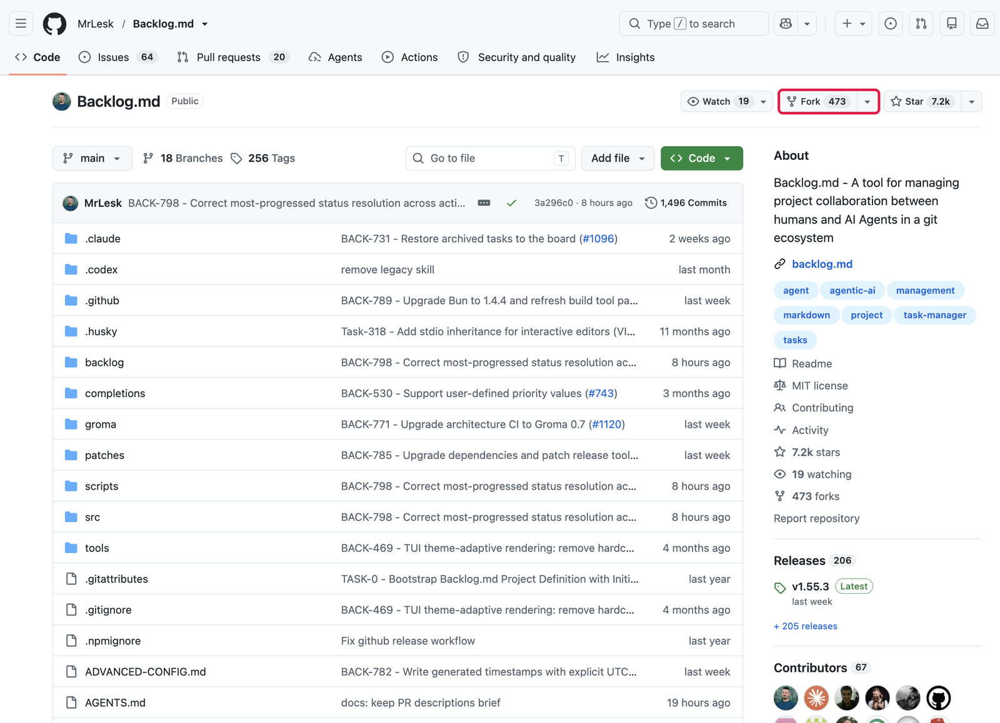
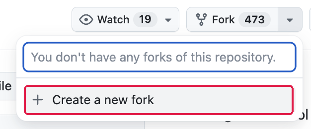
作成画面では Repository name を分かりやすい名前（例：Backlog.md-handson）に変え、Copy the main branch only はチェックしたまま Create fork を押す。
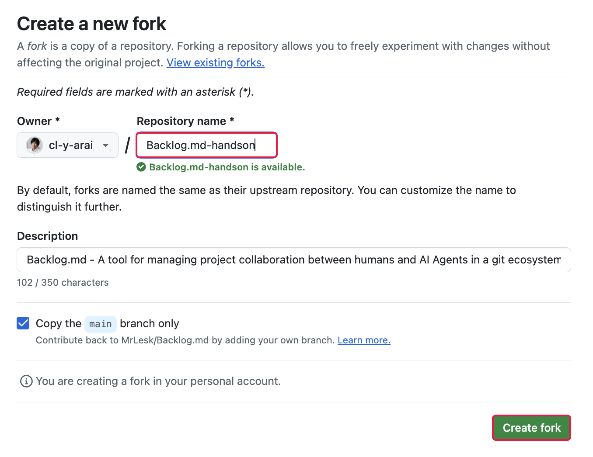
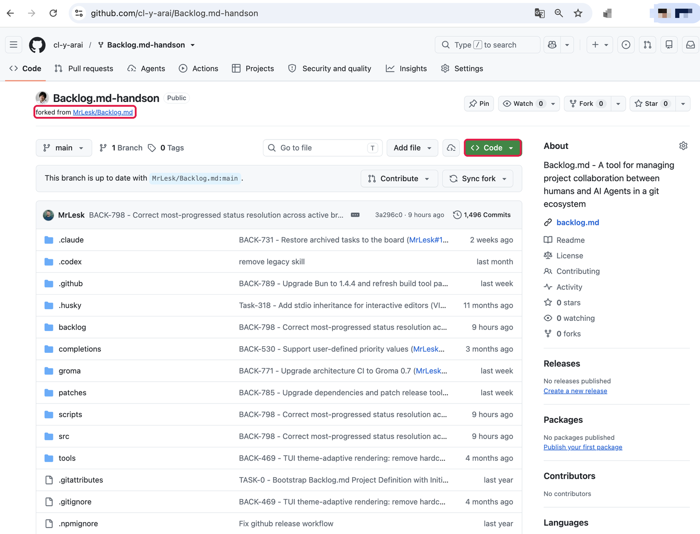
3手順2：Codespace を作成する
fork したリポジトリのページで緑の Code ボタンを押し、Codespaces タブに切り替える。
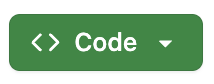
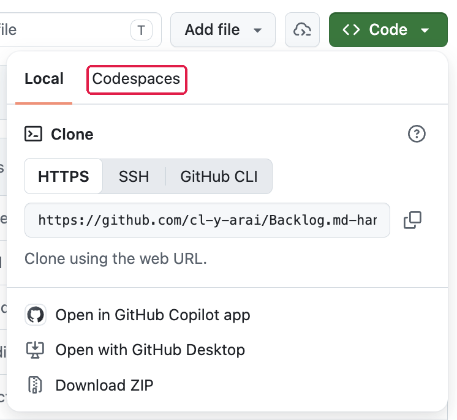
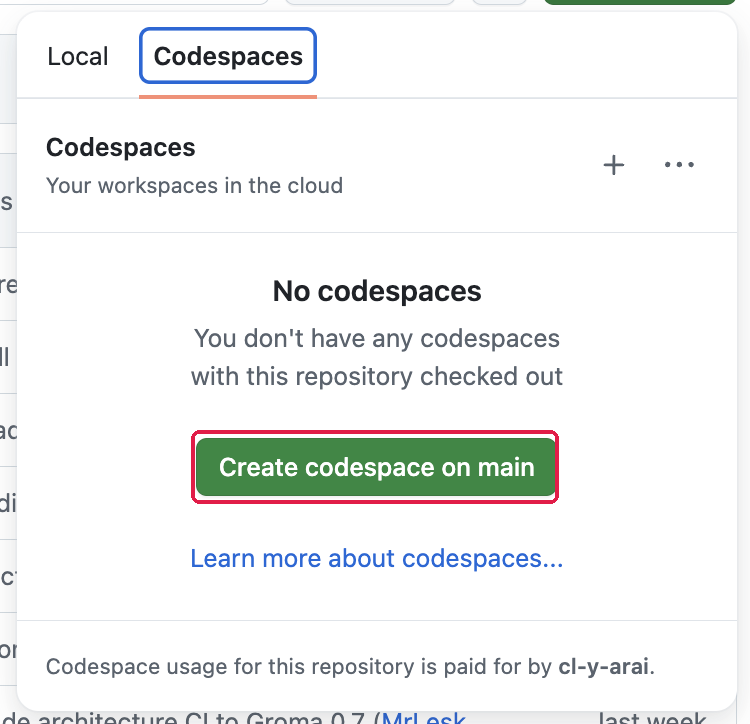
4手順3：初期化を待つ
VS Code が開くと、最初に「このフォルダー内のファイルの作成者を信頼しますか?」と聞かれる。ターミナルを使うために フォルダーを信頼して続行 を押す。
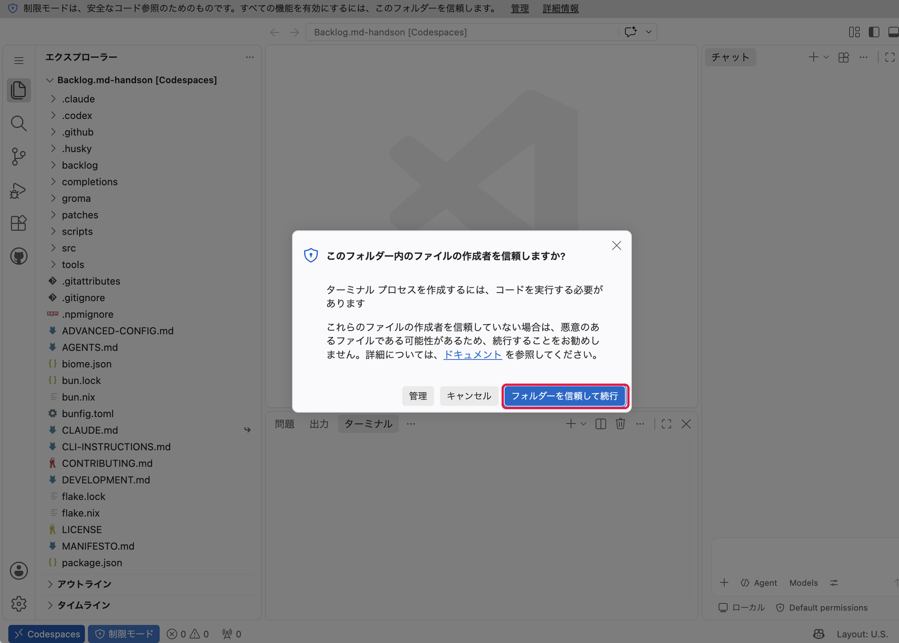
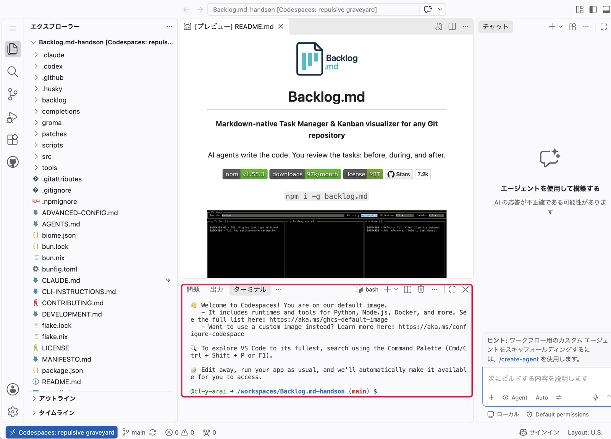
ターミナルには作成ログが流れる。既定イメージは package.json を見つけると自動で npm install を走らせるので、終わるまで待つ（1〜2分）。
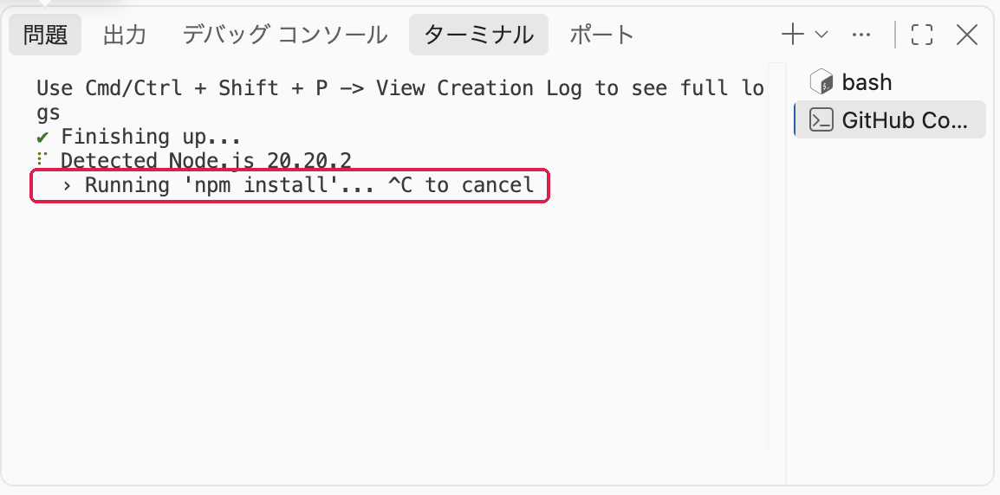
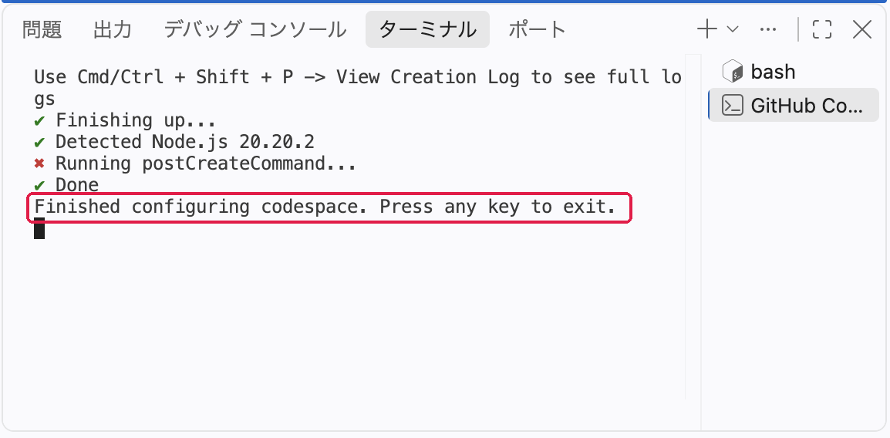
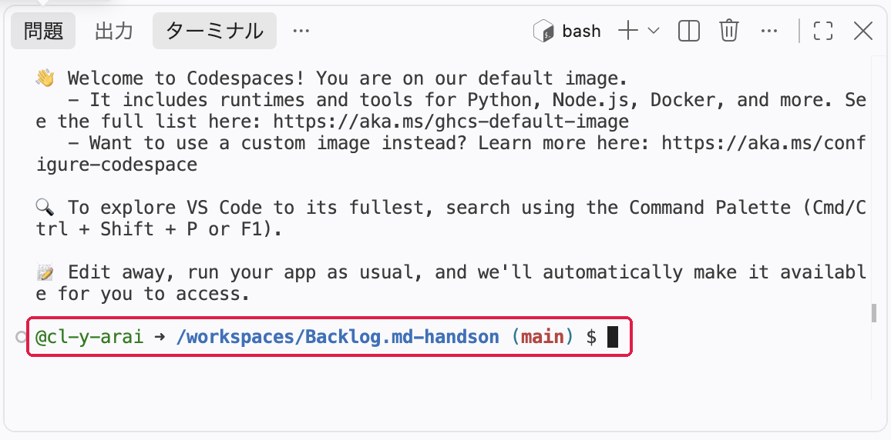
/workspaces/<リポジトリ名>（clone 済み）5手順4：Bun を入れてソースから起動する
ターミナルで次の4つを順に実行する。
$ curl -fsSL https://bun.sh/install | bash $ export PATH="$HOME/.bun/bin:$PATH" $ bun install $ bun run cli browser --no-open
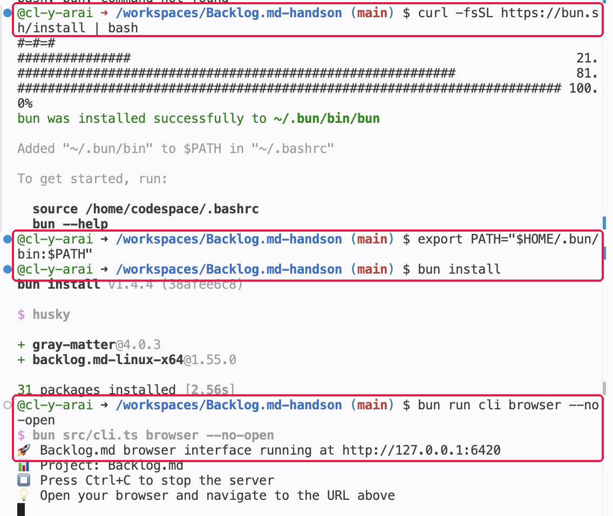
| コマンド | やっていること |
|---|---|
curl -fsSL https://bun.sh/install | bash | Bun を ~/.bun/bin に入れる。数十秒で終わる。~/.bashrc にも PATH が追記される |
export PATH="$HOME/.bun/bin:$PATH" | いま開いているターミナルで bun を使えるようにする。新しいターミナルを開く場合は不要 |
bun install | 依存パッケージを取得する（数秒）。husky が git の pre-commit フックを設定し、配布版バイナリ backlog.md-linux-x64 も入るが、ソース実行には使わない |
bun run cli browser --no-open | bun src/cli.ts browser --no-open の短縮形。ソースコードをそのまま実行して Web UI を 6420 番ポートで起動する。--no-open はコンテナ内でブラウザを開こうとしないための指定 |
6手順5：Web UI をブラウザで開く
サーバーはコンテナ内の 127.0.0.1:6420 で待ち受けている。Codespaces がこのポートを自動で検出し、ポート タブに転送先 URL が現れる。
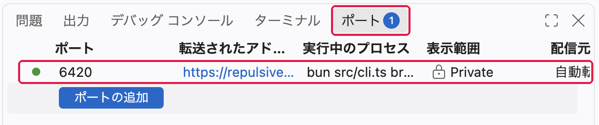
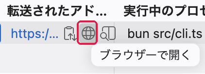
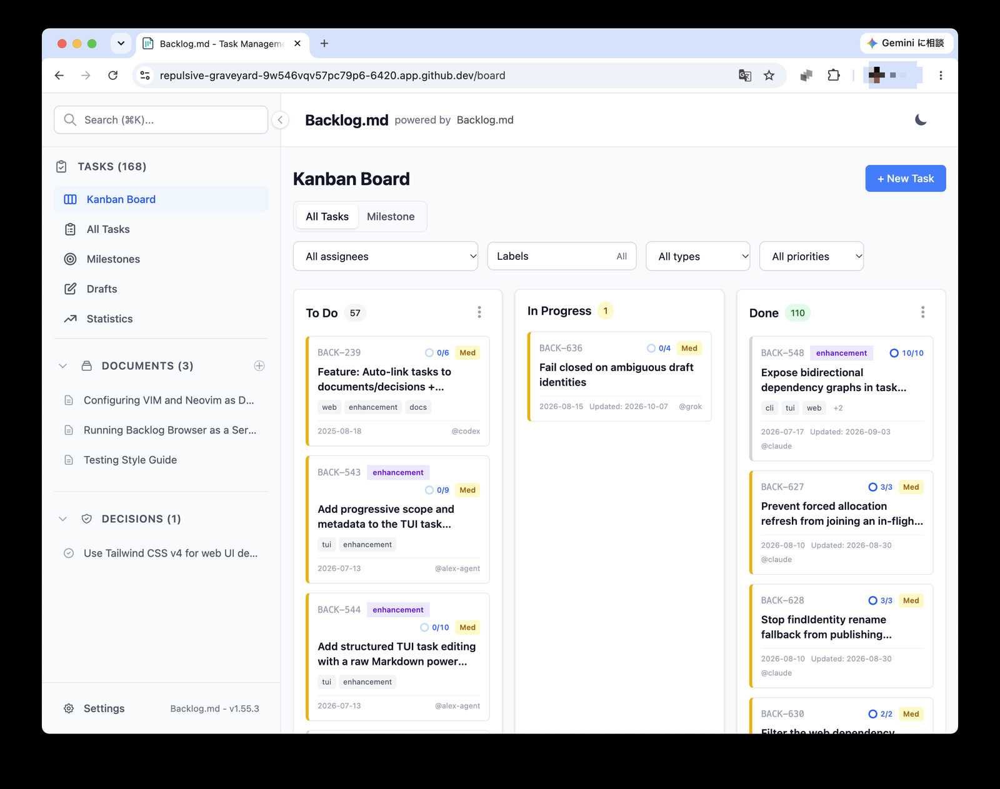
https://<codespace名>-6420.app.github.dev/ の形。表示されているタスクは Backlog.md プロジェクト自身の開発タスク- ポートタブに 6420 が出ないときは、ポートの追加 で 6420 を手動で追加する
- URL を開いて GitHub のログインを求められたら、Codespace を作ったアカウントでログインする（Private のため本人しか開けない）
- サーバーを止めるときは、ターミナルで Ctrl+C
7よく使うコマンド
すべてリポジトリのルート（/workspaces/<リポジトリ名>）で実行する。bun run cli の後ろに書いた引数は、そのまま src/cli.ts に渡る。
| 目的 | コマンド |
|---|---|
| バージョン確認 | bun run cli --version |
| タスク一覧 | bun run cli task list |
| タスク作成 | bun run cli task create "タイトル" --ac "受け入れ条件" |
| ターミナルのかんばん | bun run cli board |
| Web UI | bun run cli browser --no-open（ポートを変えるなら --port 8080） |
| 検索 | bun run cli search "キーワード" |
| 全テスト | bun run test（数分かかる） |
| テストを1ファイルだけ | bun test --timeout=10000 src/test/<ファイル>.test.ts |
| 整形・lint（Biome） | bun run check |
| 型チェック | bun run check:types |
backlog/ を操作する。リポジトリのルートで実行すると Backlog.md 自身の開発タスクが対象になる。練習用の別プロジェクトに対して使うときは --cwd <パス> を付ける（例：bun run cli task list --cwd ~/demo）。
8Claude Code と組み合わせる
同じ Codespace のターミナルに Claude Code を入れれば、ソースの読み解きや改良をブラウザだけで進められる。
$ curl -fsSL https://claude.ai/install.sh | bash $ claude
- 初回の
claude実行時、Codespace にはブラウザが無いので、ターミナルに表示される ログイン URL を手元のブラウザで開き、表示されたコードをターミナルに貼り付ける。貼り付けが効かないときはclaude auth loginを使う - 毎回ログインしたくない場合は、手元の PC で
claude setup-tokenを実行して作ったトークンを、GitHub の Codespaces secrets にCLAUDE_CODE_OAUTH_TOKENという名前で登録しておく（Pro / Max / Team / Enterprise プラン向け） - Backlog.md を MCP 経由で使う場合：
claude mcp add backlog-dev -- bun /workspaces/<リポジトリ名>/src/cli.ts mcp start
CLAUDE.md / AGENTS.md には、Backlog.md 開発チーム向けの運用ルール（MANIFESTO.md を先に読む、判断に迷ったら作者に聞く、など）が書かれている。ハンズオンの演習では、講師が用意した CLAUDE.md に差し替えるか、自分の fork で内容を調整してから Claude Code を使う。
9トラブルシューティング
| 症状 | 対処 |
|---|---|
bun: command not found | export PATH="$HOME/.bun/bin:$PATH" を実行する。または新しいターミナル（＋ボタン）を開く |
| ポートタブに 6420 が出ない | サーバーが起動しているか確認（「running at http://127.0.0.1:6420」の表示）。出ていれば「ポートの追加」で 6420 を追加する |
| URL を開くと GitHub のログイン画面や 404 になる | Codespace を作ったアカウントでログインしているか確認する。表示範囲が Private のため、他の人には開けない |
| ポート 6420 が使用中と言われる | 前回のサーバーが残っている。bun run cli browser --no-open --port 6421 のように別ポートで起動するか、pkill -f "src/cli.ts browser" で止める |
| しばらく放置したら Codespace が止まった | アイドル状態が続くと自動停止する（既定 30分）。再開すれば Bun も作業内容も残っている。消えるのはコンテナを rebuild したときだけ |
bun install で husky のエラー | git リポジトリの外で実行している。cd /workspaces/<リポジトリ名> してから実行する |
10後片付け：Codespace の停止・削除
- 作業を中断するときは、ブラウザのタブを閉じるだけでよい（しばらくすると自動停止する）。手動で止めるなら、画面左下の Codespaces メニューから「Stop Current Codespace」
- 使い終わったら github.com/codespaces を開き、該当の Codespace の「…」から Delete する。停止中の Codespace もストレージ分の枠を消費する
- fork したリポジトリは残しておいて構わない。不要なら Settings の最下部「Delete this repository」から削除する